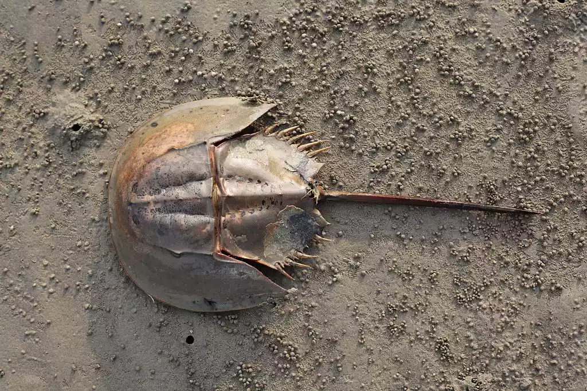
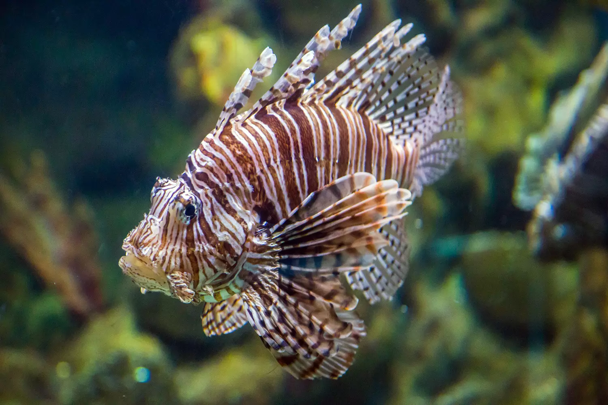
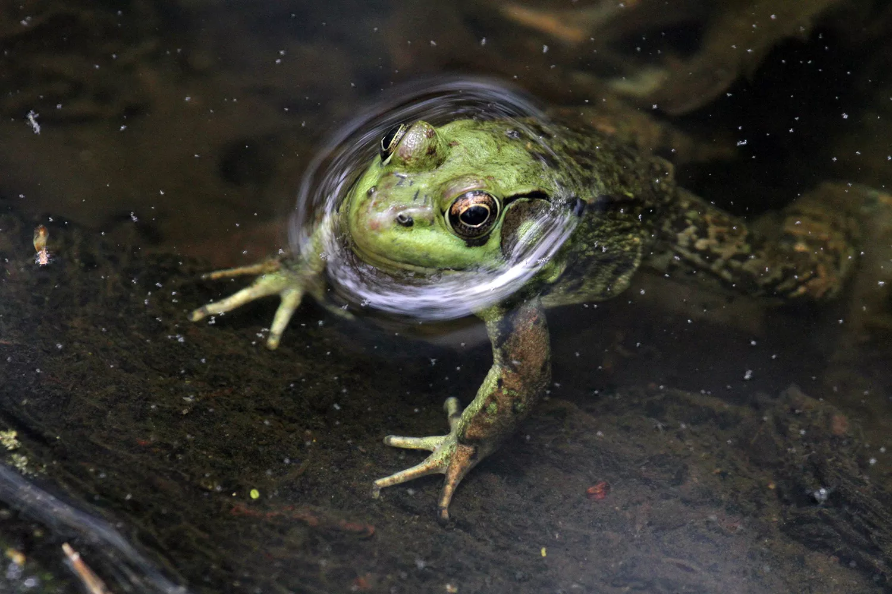
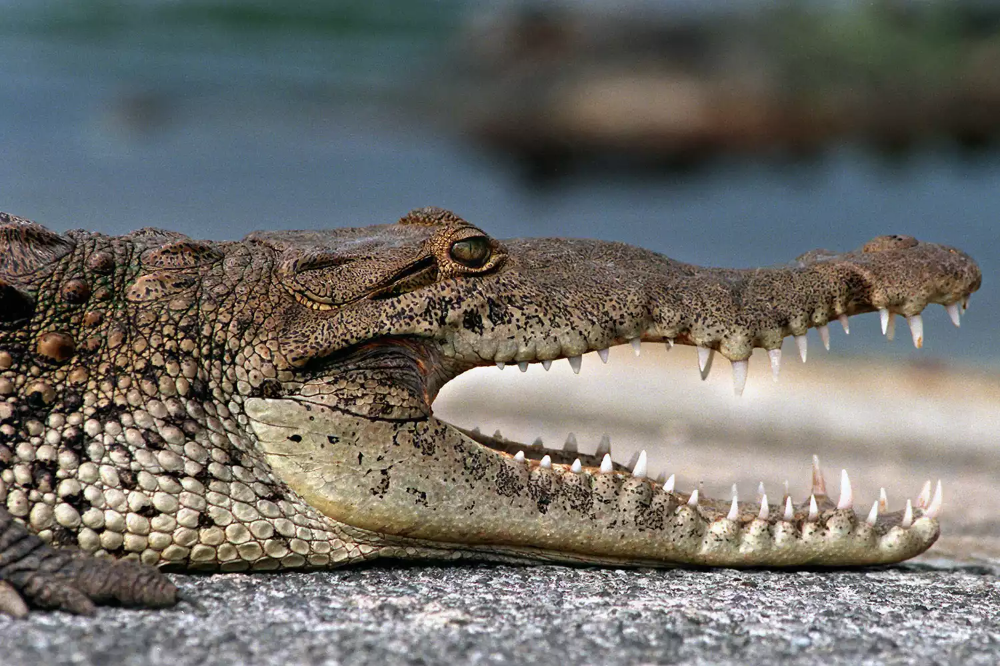
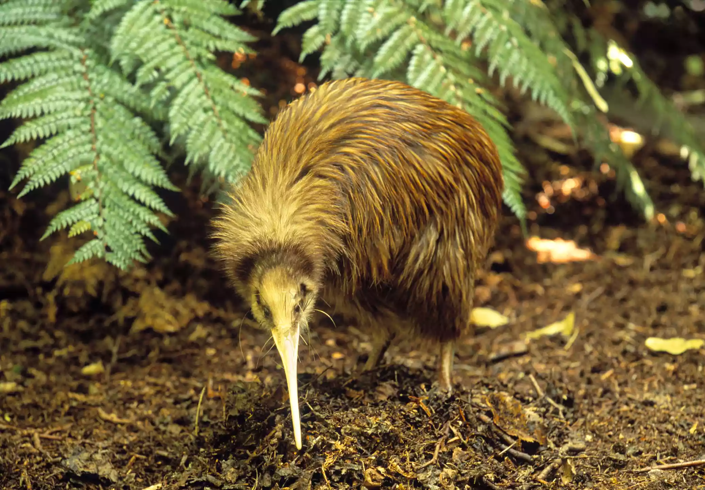
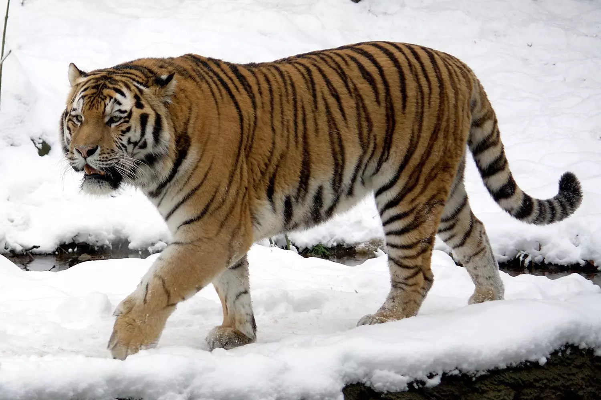

Invertebrates
The first animals to evolve, as far back as a billion years ago, invertebrates are characterized by their lack of backbones and internal skeletons as well as their relatively simple anatomy and behavior, at least compared with those of most vertebrates. Today, invertebrates account for a whopping 97 percent of all animal species, a widely varied group that includes insects, worms, arthropods, sponges, mollusks, octopuses, and countless other families.
Fish
The first true vertebrates on Earth, fish evolved from invertebrate ancestors about 500 million years ago and have dominated the world's oceans, lakes, and rivers ever since. There are three main types of fish: bony fish, which includes such familiar species as tuna and salmon; cartilaginous fish, which includes sharks, rays, and skates; and jawless fish, a small family made up entirely of hagfish and lampreys). Fish breathe using gills and are equipped with "lateral lines," interconnected networks of receptors along the head and body that detect water currents and even electricity.
Amphibians
When the first amphibians evolved from their tetrapod ancestors 400 million years ago, they quickly became the dominant vertebrates on Earth. However, their reign wasn't destined to last; the frogs, toads, salamanders, and caecilians (legless amphibians) that make up this group have long since been surpassed by reptiles, birds, and mammals. Amphibians are characterized by their semi-aquatic lifestyles (they must stay near bodies of water to maintain the moisture of their skin and to lay eggs), and today they are among the most endangered animals in the world.
Reptiles
Reptiles, like amphibians, make up a fairly small proportion of terrestrial animals, but as dinosaurs they ruled the Earth for over 150 million years. There are four basic types of reptiles: crocodiles and alligators; turtles and tortoises; snakes; and lizards. Reptiles are characterized by their cold-blooded metabolisms—they fuel themselves by exposure to the sun—their scaly skin, and their leathery eggs, which they, unlike amphibians, can lay some distance from bodies of water.
Birds
Birds evolved from dinosaurs—not once, but probably multiple times—during the Mesozoic Era. Today they are by far the most prolific flying vertebrates, numbering 10,000 species across 30 separate orders. Birds are characterized by their coats of feathers, their warm-blooded metabolisms, their memorable songs (at least in certain species), and their ability to adapt to a wide range of habitats—witness the ostriches of the Australian plains and the penguins of the Antarctic coastline.
Mammals
It's natural for people to consider mammals the pinnacle of evolution. After all, humans are mammals, and so were our ancestors. But In fact, mammals are among the least diverse animal groups: There are only about 5,000 species overall. Mammals are characterized by their hair or fur, which all species possess during some stage of their life cycles; the milk with which they suckle their young, and their warm-blooded metabolisms, which, as with birds, allows them to inhabit a wide range of habitats, ranging from deserts to oceans to arctic tundra.